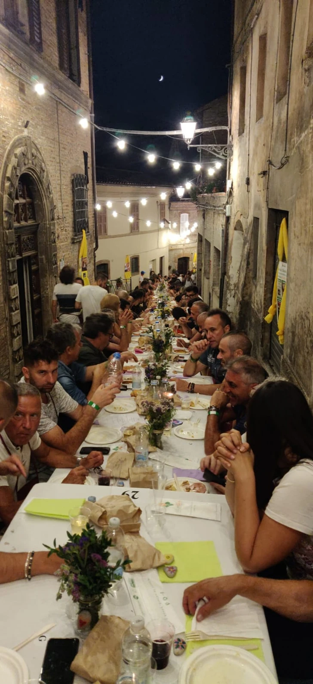
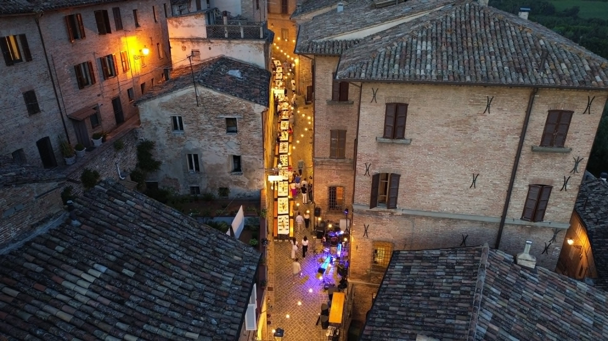
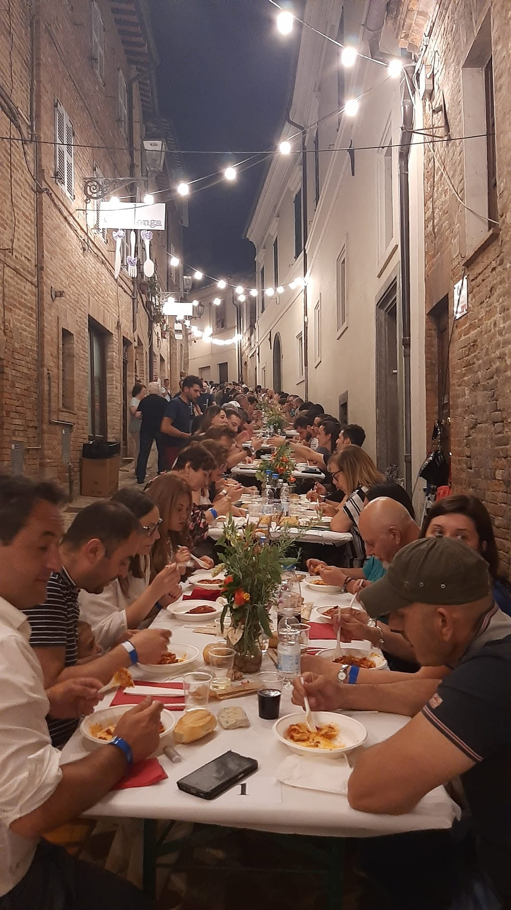
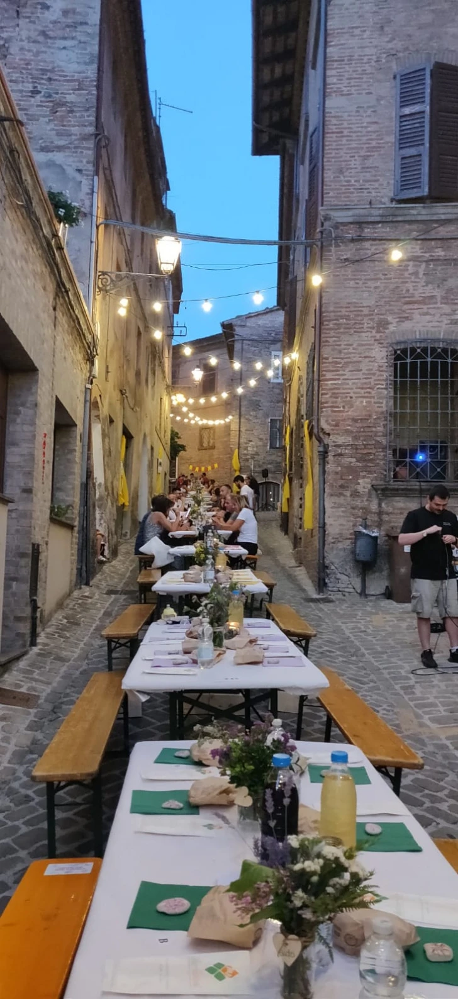
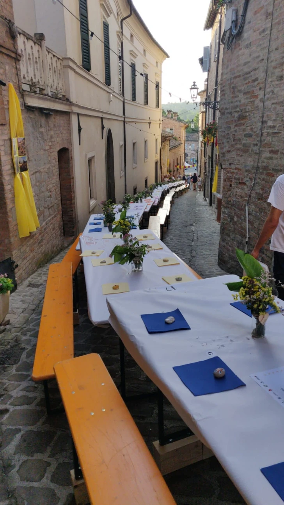
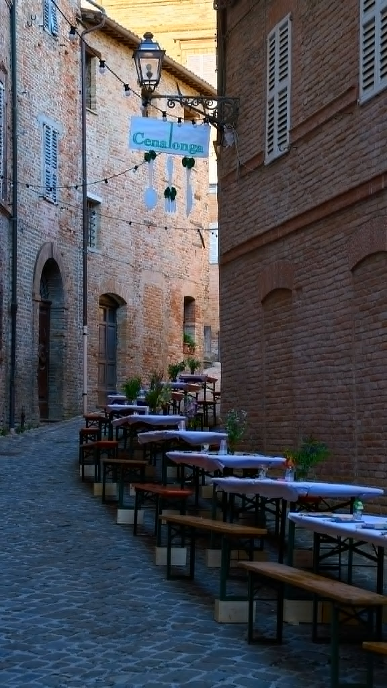
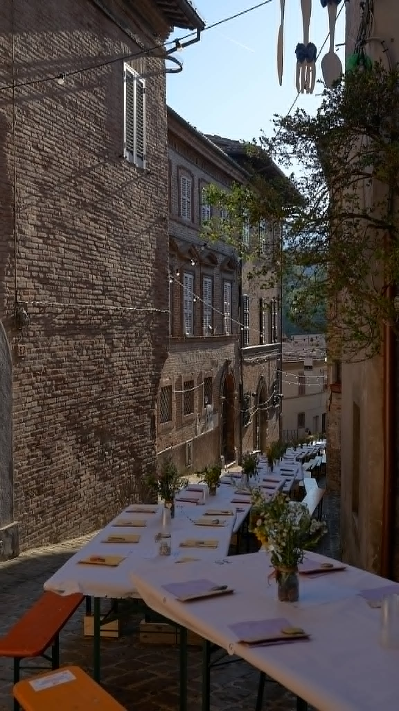
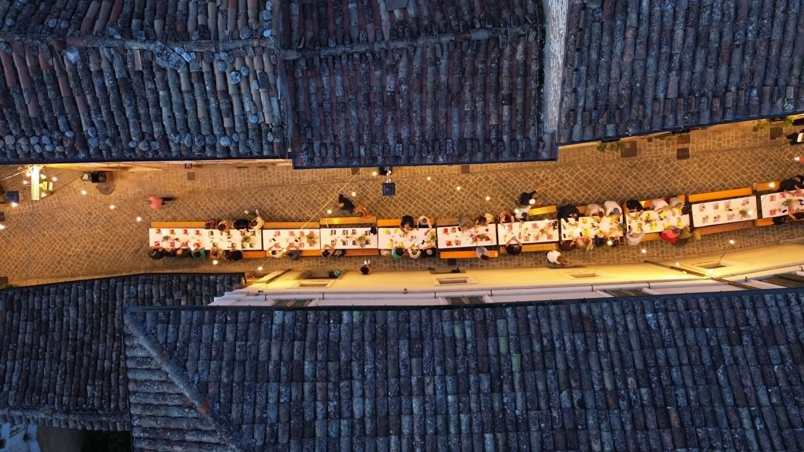

Per una sera Amandola cambia faccia. Allineiamo i tavoli uno dopo l’altro lungo Via Indipendenza, accendiamo le luci tra le case di mattoni e ci sediamo a cena. Tutto il paese, insieme.
Buon cibo del territorio, vino, musica dal vivo, artisti di strada e dj set fino a tarda notte. Non è un ristorante. È un paese che apparecchia la sua strada e accoglie chi arriva da fuori come fosse a casa.


Cominciamo al tramonto e andiamo avanti fino a notte fonda. Ecco com’è fatta la serata, dall’aperitivo all’ultimo brindisi.
Ti accogliamo al punto bar all’inizio del corso: prosecco, un calice di benvenuto e il dj che dà il via alla serata.
Serviamo le portate lungo l’unica, lunghissima tavolata che attraversa Via Indipendenza, con la musica di sottofondo che accompagna.
Tre artisti di strada animano le pause tra una portata e l’altra. Si spostano lungo i tre tratti della tavolata, così da qualsiasi posto ti godi tutti e tre gli spettacoli.
Alla Casa del Parco c’è l’animazione per i bambini, così i più piccoli si divertono mentre i grandi restano a tavola.
Arrivato il dolce, cantiamo qualche canzone insieme per scaldare l’atmosfera, poi parte il dj set.
Quando i tavoli si svuotano si balla davanti al bar, in fondo al corso, con Michele “DJ Wolf” alla consolle. Cocktail e brindisi fino a tarda notte.
Qualche scatto delle serate degli anni scorsi.






Il paese si siede a cena. Insieme.
I posti sono pochi. Apriamo le prenotazioni sabato 20 giugno e chiudiamo il 2 luglio: online su Eventbrite, oppure di persona all’Ufficio Turistico di Amandola, senza commissioni. Torna qui o segnati la data.
Prenotazioni gestite su Eventbrite, tramite cenalongamandola.com.
Sì. La tavolata ha un numero chiuso di posti: quando finiscono, chiudiamo le prenotazioni. Meglio non aspettare, prenota appena apriamo il 20 giugno.
Hai due strade. Online su Eventbrite, che trovi da questo sito dal 20 giugno. Oppure di persona all’Ufficio Turistico di Amandola, senza commissioni. In tutti e due i casi scegli quanti posti ti servono, tra adulti e bambini.
30€ per gli adulti e 15€ per i bambini, per coprire la cena. Paghi quando prenoti, su Eventbrite o all’Ufficio Turistico di Amandola.
Altroché. La CenaLonga è una festa di paese: famiglie e bambini sono parte della serata, con una quota ridotta apposta per loro. E durante la cena, alla Casa del Parco, c’è l’animazione per i più piccoli.
Ceniamo sul corso, all’aperto. Se il meteo fa i capricci, ti aggiorniamo sui nostri canali social e su cenalongamandola.com.